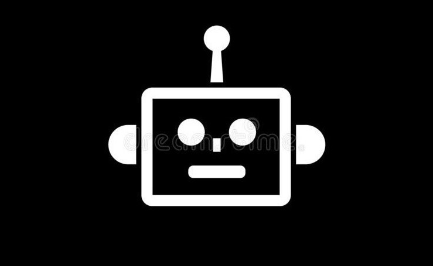
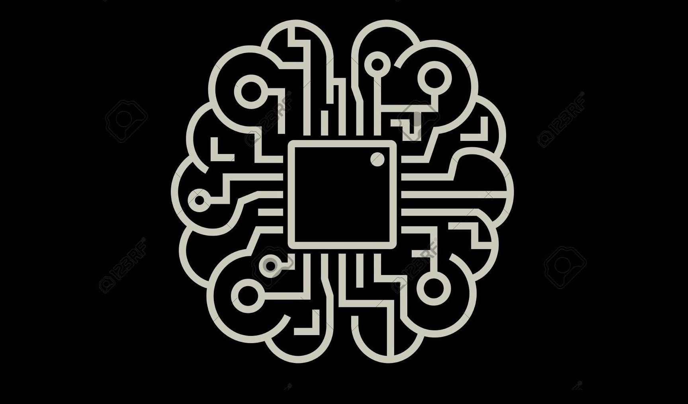

About ME
Hello, I am Nilutpol Kashyap. I like spending my time working on passion projects, participating in hackathons and exploring the cutting edge of technology. I'm a strong advocate of using technology for social good.
Computer Vision |
 Robotics |
 Machine Learning |
|---|---|---|
| I like to work on Computer Vision using C++ and Python. | I can design robots from scratch and then make them work using ROS. | I like to solve various machine learing problems using new algorithms. |
| Things I enjoy doing: | Things I enjoy doing: | Things I enjoy doing: |
| Image Processing Object Detection Stereo Vision |
3D Designing Simulation Path Plannig Perception Navigation |
Feature Engineering CNN Deep Learning GAN |
| Languages I speak: | Languages I speak: | Languages I speak: |
| C++ Python |
Python C++ JavaScript |
Python C++ |
| Tools I use: | Tools I use: | Tools I use: |
| Jupyter Notebook VS Code Intel OpenVINO OpenCV (C++) OpenCV (Python) Keras Pytorch TensorFlow |
ROS Gazebo Rviz Arduino Fusion 360 Blender Raspberry Pi QT Designer |
Jupyter Notebook TensorFlow PyTorch CUDA Toolkit OpenAI Gym |
🖼️My Recent Work📹
Here are a few projects I've worked on recently.
Want to see more? Visit Here!!
BUG Robot
A 2 wheeled different drive robot.

It is fifth section in this page which describes how to specify an image at right side of a paragraph using the Html tag.The CSS box model is essentially a box that wraps around every HTML element. It consists of: borders, padding, margins, and the actual content.
Self Driving Car Simulation
 The Google Coral Camera attached to the NavQ board is able to detect objects.
By using SSD, we only need to take one single shot to detect multiple objects within the image, while regional proposal network (RPN) based approaches
such as R-CNN series that need two shots, one for generating region proposals, one for detecting the object of each proposal. Thus, SSD is much faster compared with two-shot RPN-based approaches.
The Google Coral Camera attached to the NavQ board is able to detect objects.
By using SSD, we only need to take one single shot to detect multiple objects within the image, while regional proposal network (RPN) based approaches
such as R-CNN series that need two shots, one for generating region proposals, one for detecting the object of each proposal. Thus, SSD is much faster compared with two-shot RPN-based approaches.
Gripper Bot
 The Google Coral Camera attached to the NavQ board is able to detect objects.
By using SSD, we only need to take one single shot to detect multiple objects within the image, while regional proposal network (RPN) based approaches
such as R-CNN series that need two shots, one for generating region proposals, one for detecting the object of each proposal. Thus, SSD is much faster compared with two-shot RPN-based approaches.
The Google Coral Camera attached to the NavQ board is able to detect objects.
By using SSD, we only need to take one single shot to detect multiple objects within the image, while regional proposal network (RPN) based approaches
such as R-CNN series that need two shots, one for generating region proposals, one for detecting the object of each proposal. Thus, SSD is much faster compared with two-shot RPN-based approaches.
Work Experience
I'm proud to have worked with some awesome companies:
R & D Intern - Tech-In-Farm, Silpakriti Pvt. Ltd.
• Work on different IoT platforms.
• Integration of AI/ML algorithms.
• Assist the team members in their activities.
Robotics Developer - Zarp Labs R&D Pvt. Ltd.
• Collaborated in design and development of a Humanoid robot in Gazebo simulation.
• Implemented ROS based Autonomous Navigation and Path Planning on the robot.
• Created a web UI dashboard for sending control signals using ROS.
• Implemented custom object detection algorithm to detect humans.
Trainings
ROS Mentee - RigBetel Labs LLC
• Worked on 3D design, addition of sensors and plugins of a 2 wheeled Differential Drive robot.
• Simulated the robot in a custom world in Gazebo.
• Built a ROS package for performing SLAM using GMapping and AMCL packages.
Want to HIRE me, OR perhaps WORK with ME?
Please Fill Out this FORM. I will GET BACK to YOU soon: